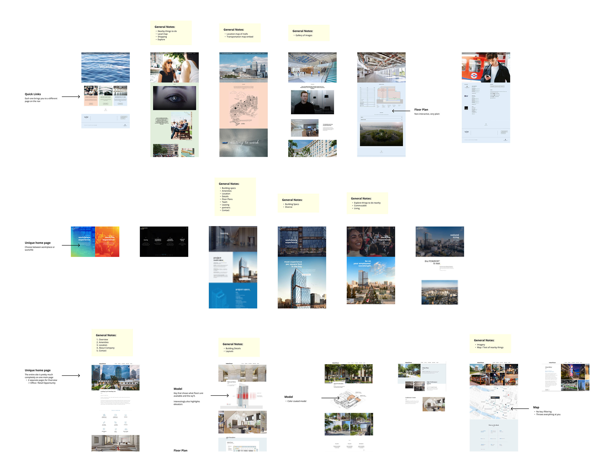
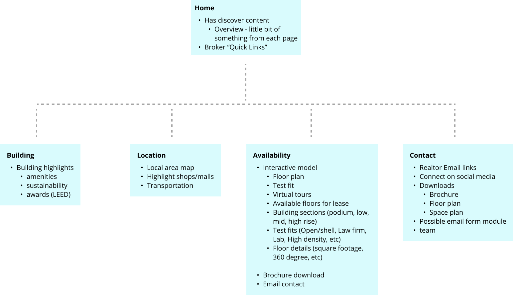
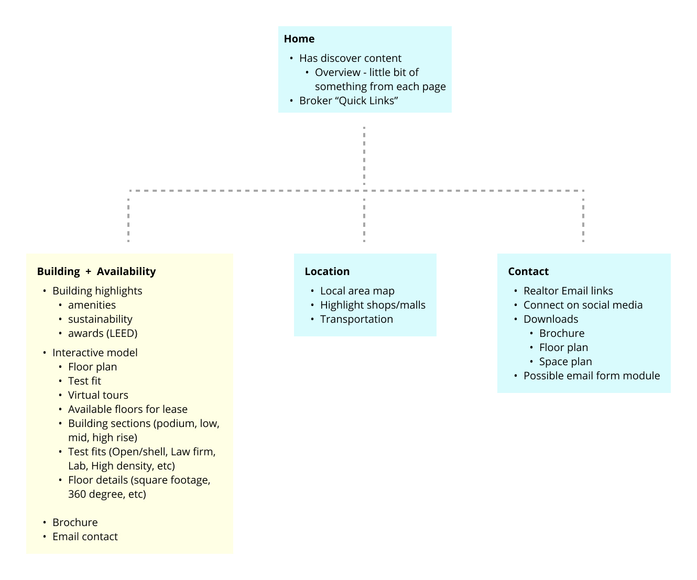
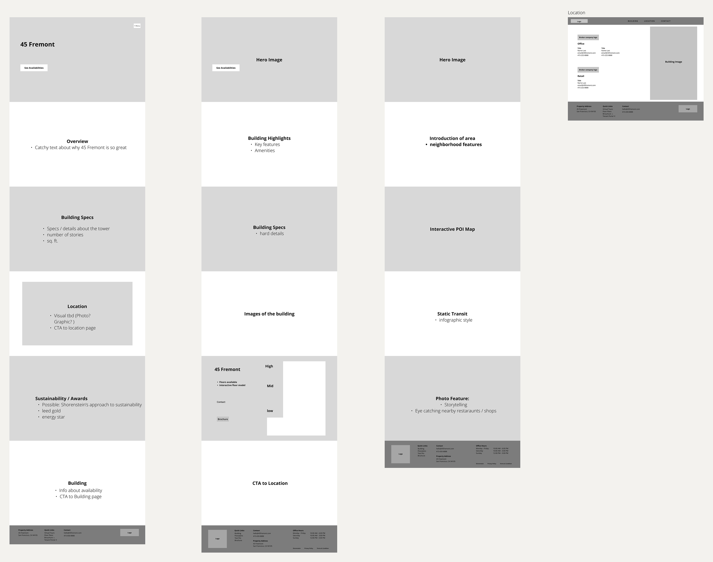
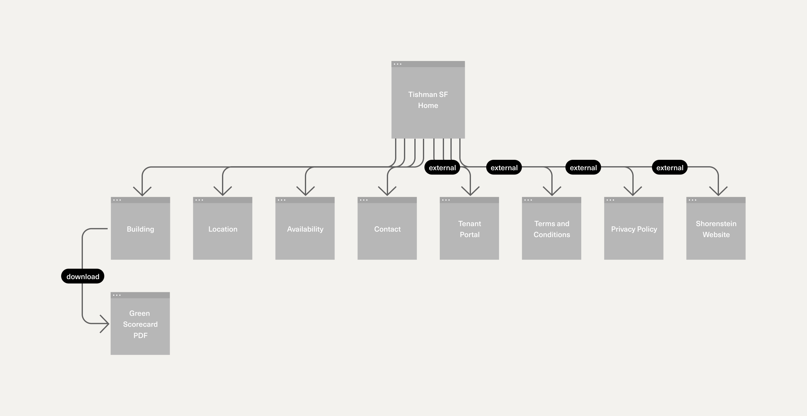
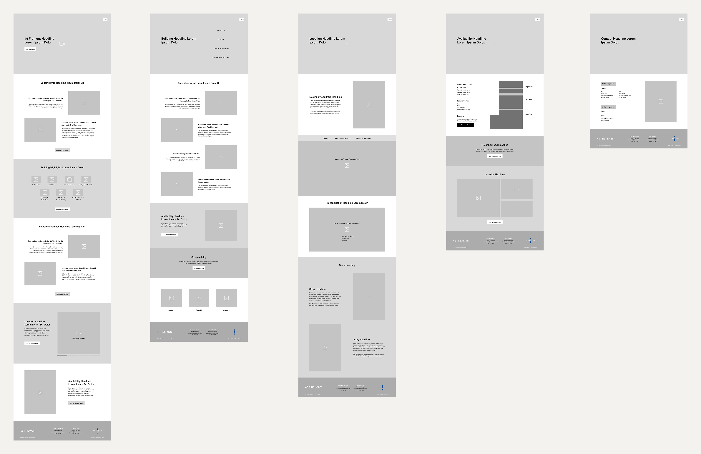
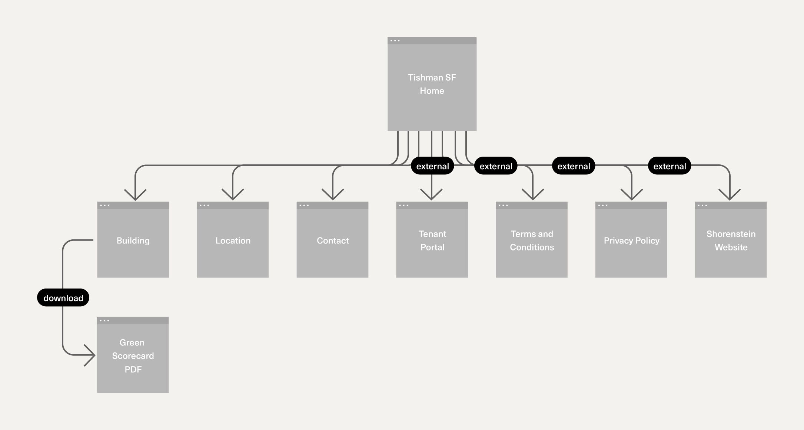
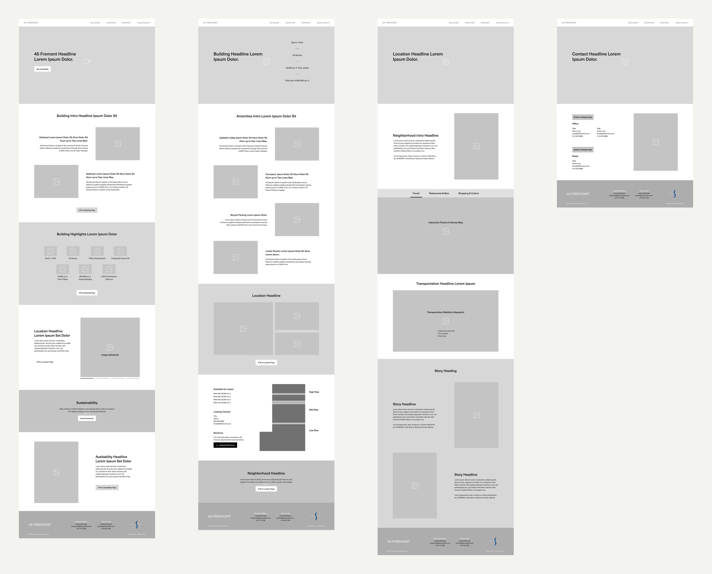
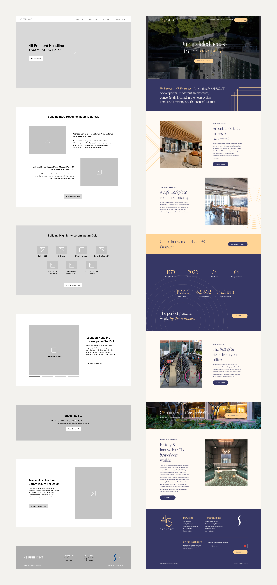

45 Fremont
Creating a real-estate website template to optimize the leasing experience
My Role:
Product Designer
Duration:
3 Months
Team:
Savage Bureau
Skills:
UX Design
User Research
Wireframing
Product Designer
3 Months
Savage Bureau
UX Design
User Research
Wireframing
45 Fremont is a newly developed building in San Francisco, California, looking to build their website to promote to audiences that they are available for leasing.
My role on this project was creating the site map, which was intended to become a guide for future Shorenstein property websites to follow.
Additionally, I created the UX Design behind the interactive building module- a key component that helps audiences visualize the possibilities of leasing at 45 Fremont.
To better understand the real estate industry, I conducted a competitive analysis, annotating the pros and cons of similar property websites.

After looking at 7 different property websites and meeting internally, we concluded that the biggest pain point when navigating through real-estate property websites was the differences between content on the Building and Availability pages.
It was often confusing trying to navigate through these two divs as we often wondered where content regarding floor plans or interactive building modules was located.
Follows more of a traditional route of navigation where the Building and Availability pages are separate from one another.

Reduces the confusion of searching between the Building and Availability pages to find floor plans or the interactive building module. This would create a straightforward experience for users that would reduce stress and unnecessary scrolling.

These would then be produced into individual wireframes that included the div name and type of content to be included on the page. I then presented to our internal team where we narrowed down which sitemap directions would be best to show to our client.


After the second round of internal reviews, we created higher-fidelity wireframes for both directions, adding potential design layouts with image placement boxes, filler body text, and call to action buttons.




After presenting the 2 options to our client, they decided on Direction B. Here is a side-by-side comparison of the home page template and the final website.
